Esporte
Formação de alunos-atletas na Quadra Vini Jr., com disciplina, cooperação e superação.
Nosso portfólio
O Instituto São Paio nasceu no esporte, cresceu na educação e hoje tem na cultura o seu maior alcance. Estes são os projetos que desenvolvemos dentro do Espaço Cultural Panorama, no Colubandê, sempre de portas abertas para a comunidade.
Formação de alunos-atletas na Quadra Vini Jr., com disciplina, cooperação e superação.
Música, teatro, dança e audiovisual, além da leitura e das oficinas na Casa Amarela.
Teatro, cineclube, biblioteca, podcast e dança no Espaço Cultural Panorama.
Aula de verdade, professor de verdade, no palco e nas salas do Espaço Cultural Panorama. Tem turma para criança, para adulto e para pessoa idosa.
Do primeiro dedilhado à leitura de partitura, no piano do Panorama, com acompanhamento individual.
Falar sobre a turmaAulas às quartas com o Curso de Teatro Carol Araújo. Turmas de 6 a 16 anos e a turma Ator e Método, para jovens e adultos a partir de 16 anos.
Falar sobre a turmaSegundas à noite com a professora Amanda Rosas. Samba, forró, bolero e soltinho, numa turma que virou ponto de encontro do Colubandê.
Falar sobre a turmaAcordes, ritmo e repertório, do zero ao primeiro show, com instrumento disponível para quem não tem.
Falar sobre a turmaTécnica vocal, respiração e afinação, para quem canta no chuveiro e para quem já canta na igreja ou na banda.
Falar sobre a turmaLevada, coordenação e repertório na bateria do estúdio, para quem quer tocar em banda.
Falar sobre a turmaA base que segura a música. Groove, leitura e entrosamento com a cozinha rítmica.
Falar sobre a turmaSopro, embocadura e repertório popular, do choro ao gospel, com professor residente.
Falar sobre a turmaContação de histórias, clube de leitura e oficinas culturais na Biblioteca A Casa Amarela, sem custo nenhum.
Falar sobre a turmaCada turma tem a sua coordenação, e o jeito mais rápido de entrar é falar direto com quem dá a aula. A agenda completa e os avisos de vaga também circulam no nosso grupo de WhatsApp e no Instagram @espacoculturalpanorama.
Cada turma tem o seu álbum. As fotos passam sozinhas, e ao clicar abre a galeria daquela turma.
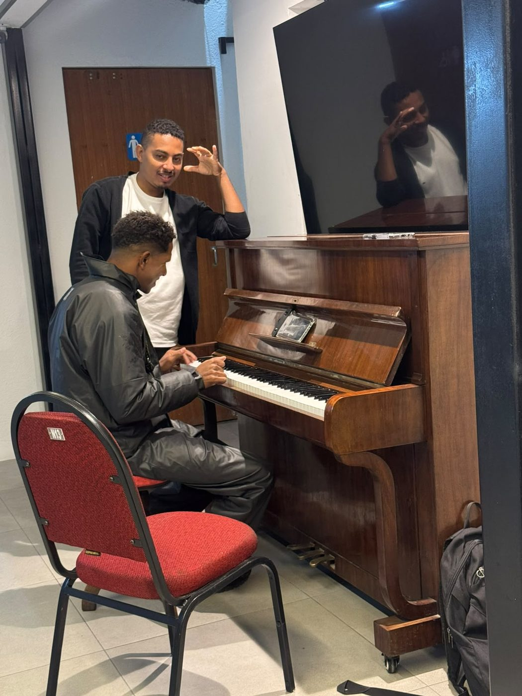
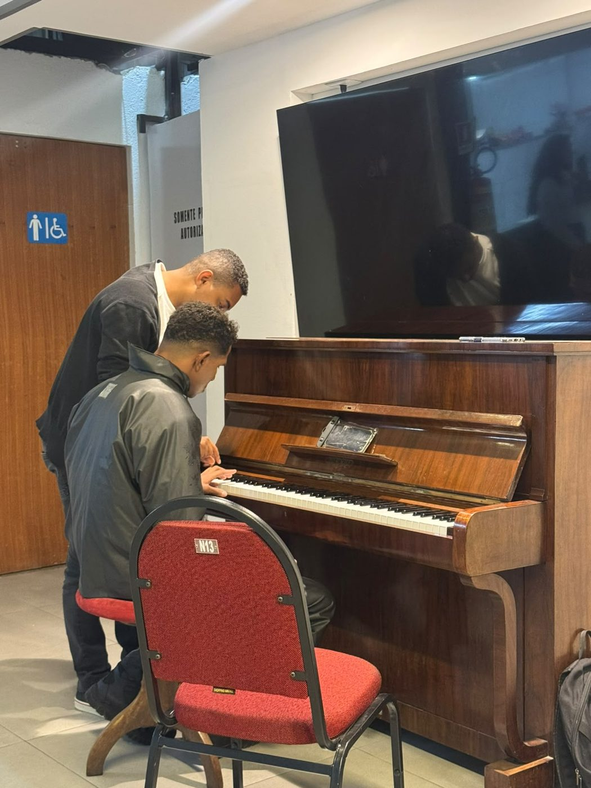
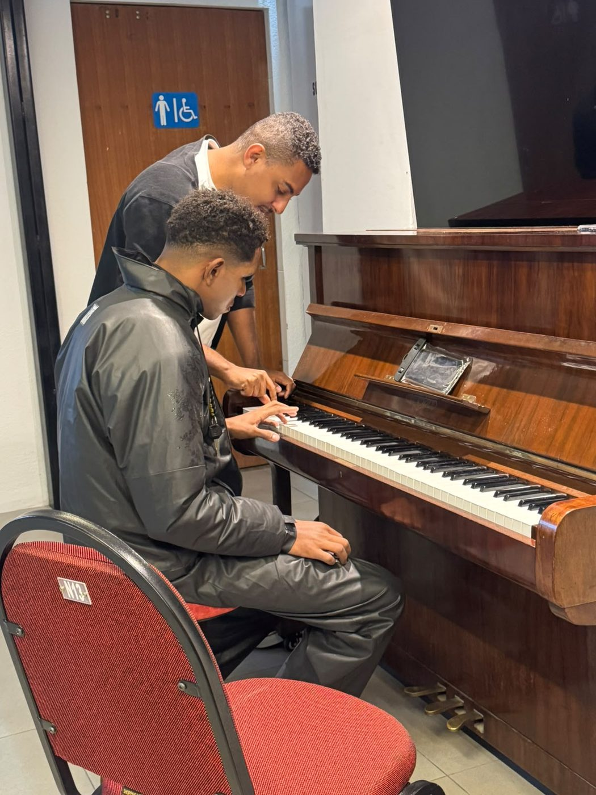
Aula individual, do primeiro acorde à peça inteira.
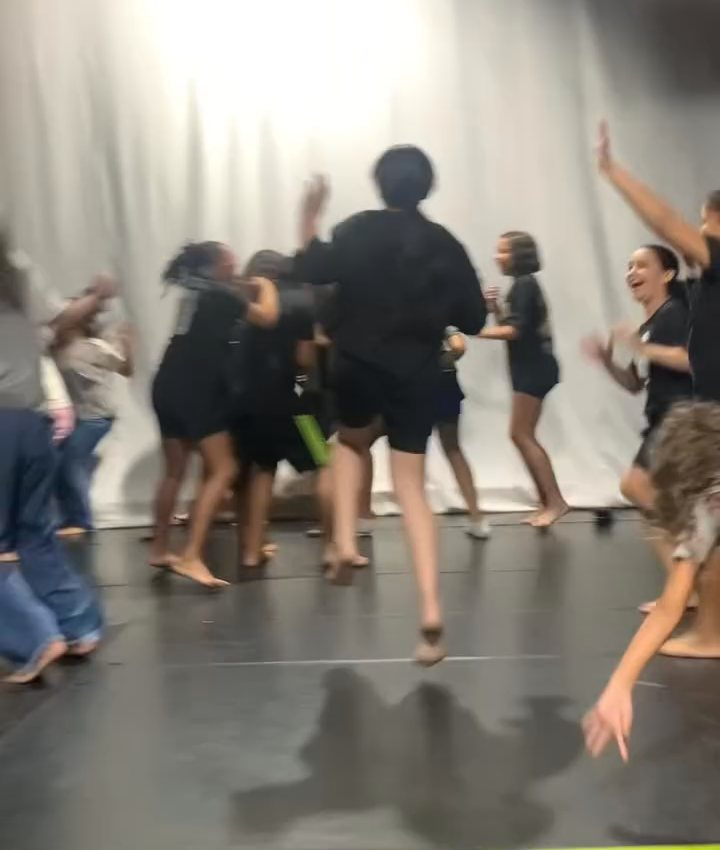
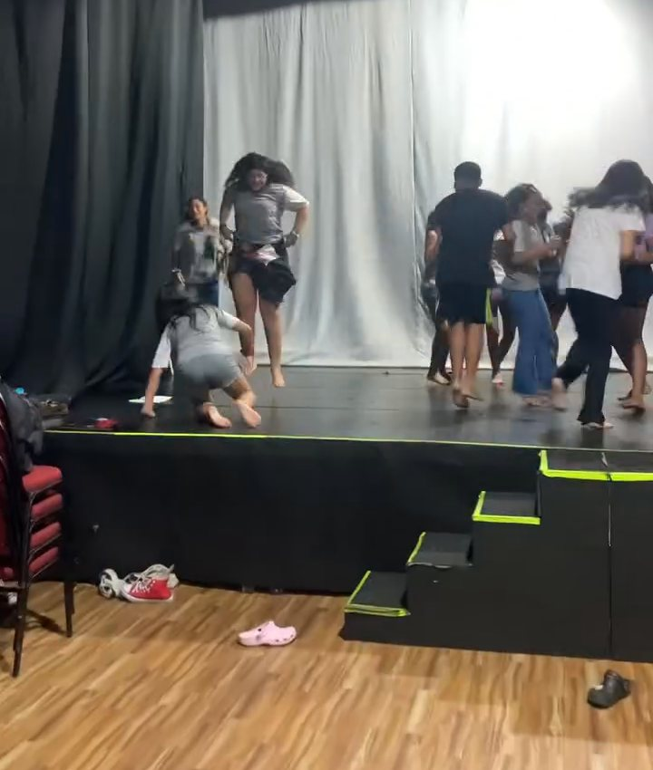
Turma infantil, turma juvenil e a turma Ator e Método, às quartas.
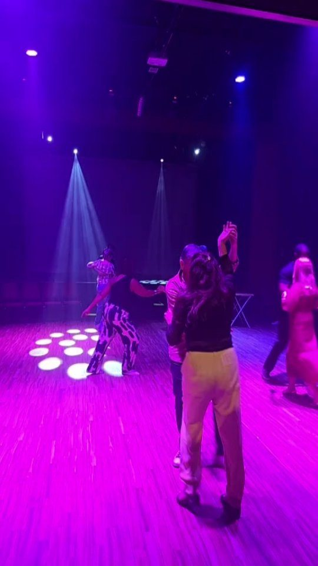
Samba, forró, bolero e soltinho, com baile no palco.
Não é ensaio de apresentação, é quarta-feira comum. A criançada chega da escola, larga a mochila, e em dez minutos o palco de 270 lugares vira sala de aula.
É assim toda semana, com turmas separadas por idade e uma turma de Ator e Método para quem já passou dos 16.
Cinema gratuito no teatro de 270 lugares, com sessão infantil de tarde e sessão adulta à noite. O projeto é do Espaço Cultural Panorama e ganhou o acervo audiovisual da Casa Amarela como parceiro a partir de 2026.
A noite de "Criadas" está contada por inteiro, com vídeo, na página da Biblioteca A Casa Amarela.
Sempre que o teatro enche, a gente abre espaço para quem produz e vende. Barraca montada no saguão, artesã ao lado da autora, doceira ao lado da plateia. Quem veio ver um filme ou assistir a uma palestra sai levando alguma coisa feita por gente do bairro.
Na noite de "Criadas", a feira de artesanato ocupou o saguão antes da sessão. No Encontro de Mães Empreendedoras, as bancas foram montadas dentro do teatro, entre a palestra e a roda de negócios.
Não cobramos taxa de quem expõe. O espaço é cedido, o público é o mesmo do espetáculo, e o dinheiro fica com quem produziu.
O Instituto São Paio firmou parceria com a ABRAz, Associação Brasileira de Alzheimer, Regional Rio de Janeiro, e trouxe para o Colubandê uma agenda permanente sobre a Doença de Alzheimer. O primeiro encontro aconteceu em setembro de 2026, no palco do Espaço Cultural Panorama.
120
pessoas no primeiro encontro
1 por mês
todo mês, sem inscrição e sem cobrança
Outubro
o próximo encontro é com as famílias
A ABRAz explica o que é a Doença de Alzheimer, o que muda na rotina de quem convive com ela e como acolher um familiar que começa a esquecer. Quem chega sai sabendo que existe uma rede de informação, orientação e apoio, e sabendo onde encontrá-la.
A programação é aberta a todo mundo. Vem quem cuida, vem quem é cuidado, vêm as turmas de teatro, dança e música da casa, vêm os leitores da biblioteca e vem quem só passou na porta e resolveu entrar. Não tem inscrição, não tem cobrança e não tem porta fechada.
Em outubro a roda é com as famílias. Nos meses seguintes a parceria traz cursos de formação para cuidadores de idosos e a implantação de um espaço fixo de acolhimento.
Data e horário de cada encontro saem no Instagram @institutosaopaio.
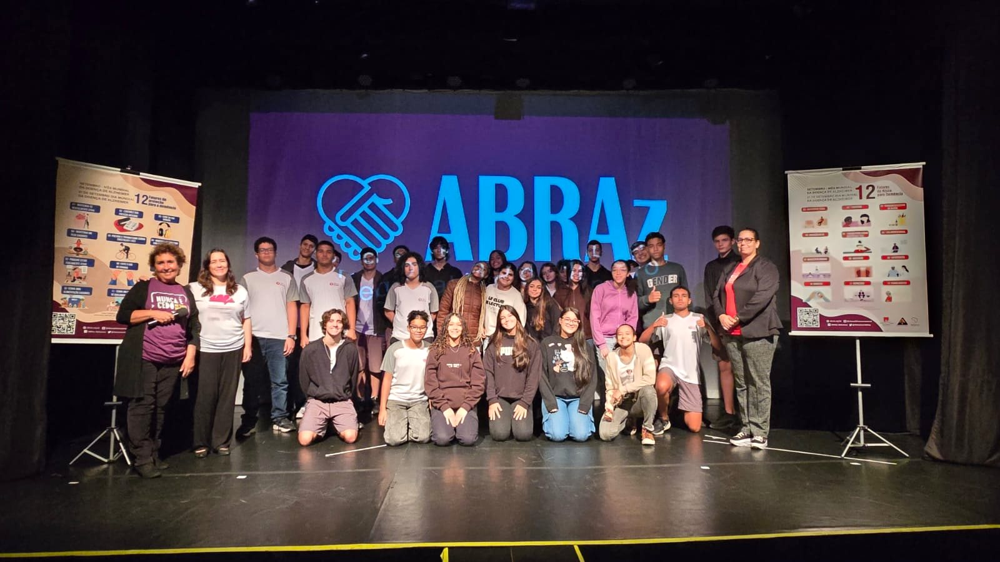
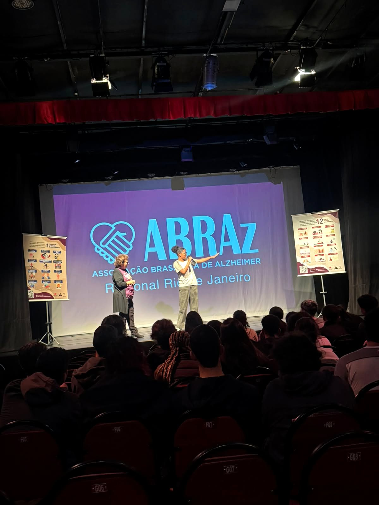
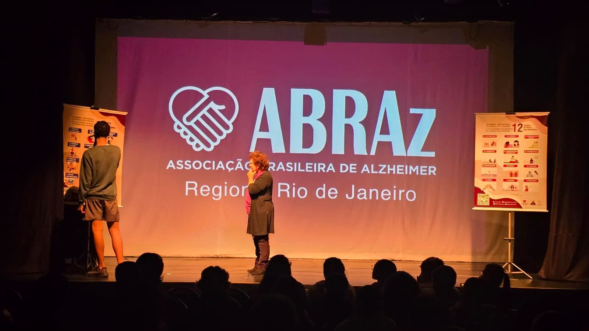
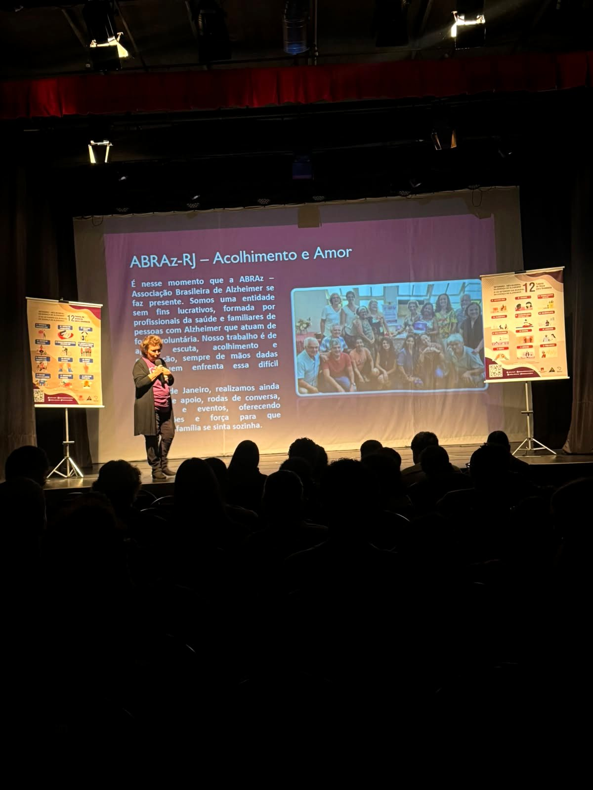
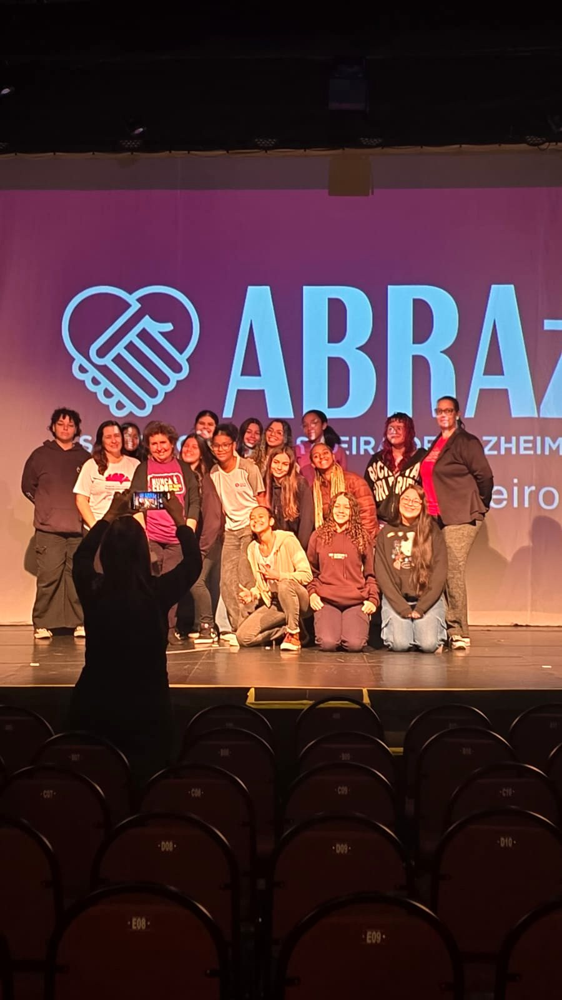
Setembro de 2026. O primeiro encontro da parceria, no palco do Panorama.
Formação que atravessa o bairro e chega em qualquer lugar. Desde 2025 abrimos turmas online sobre produção cultural, audiovisual, tecnologia e língua portuguesa, com inscrição aberta ao público e aula ao vivo pelo Google Meet ou Zoom.
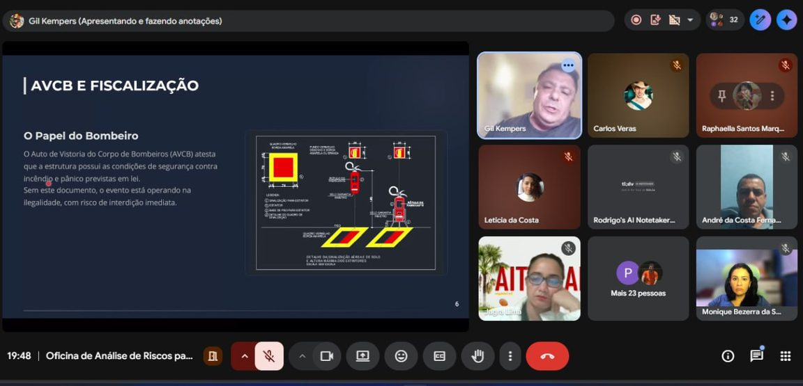
Quem não consegue chegar ao Colubandê entra pelo celular. As turmas online reúnem produtores culturais, estudantes, artistas e gente que está começando agora, de São Gonçalo e de fora dele, em encontros ao vivo com professores da área.
São aulas curtas, práticas e com material de apoio. Quem participa sai sabendo escrever um projeto, operar uma câmera, gravar um podcast ou montar um site.

Curso gratuito de audiovisual (podcast, drone, câmera, direção de arte) com a Produplay, via Lei Paulo Gustavo.
Saiba mais
Curso "Pensar Acessibilidade no Audiovisual", em parceria com a Produplay e a Lei Paulo Gustavo.
Saiba mais
Campanha que arrecadou livros e formou o acervo da Casa Amarela. Na biblioteca, Liberte um Livro é também o nosso livro de rua, a biblioteca inflável itinerante que monta estante na calçada e distribui leitura para quem passa.
Ver as fotos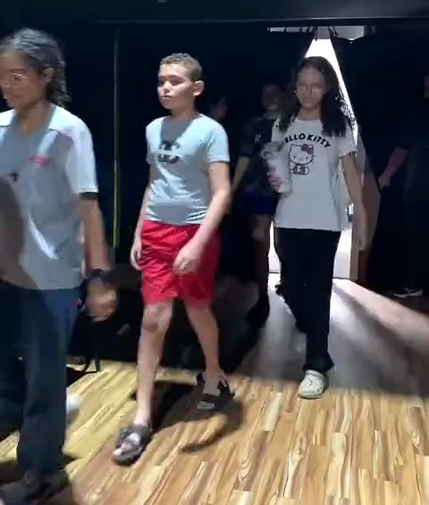
Aulas às quartas no Espaço Cultural Panorama, com o Curso de Teatro Carol Araújo. Tem turma infantil, turma juvenil e a turma Ator e Método, para jovens e adultos.
Falar com a coordenaçãoSegundas à noite com a professora Amanda Rosas. Samba, forró, bolero e soltinho, para adultos e pessoas idosas, com baile no palco de 270 lugares.
Ver o vídeo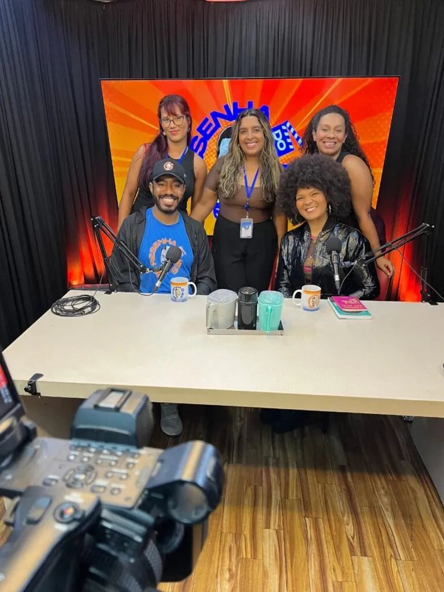
Produzido no estúdio do Panorama, valoriza as trajetórias de multiartistas fluminenses.
Saiba mais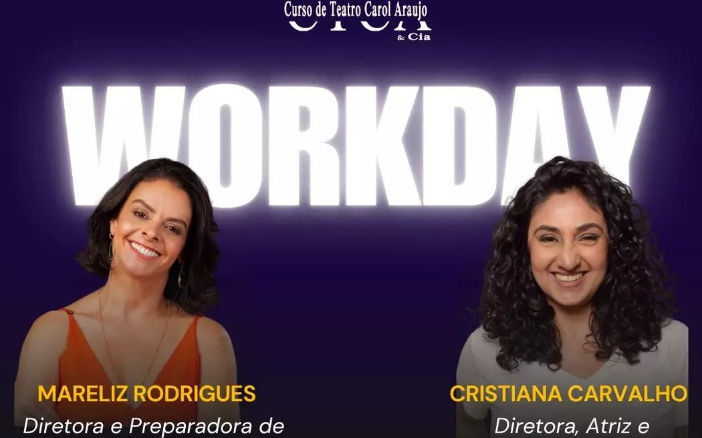
Workday sobre interpretação para TV e cinema em 2 de agosto de 2026, com Mareliz Rodrigues e Cristiana Carvalho. Palestra sobre o mercado audiovisual pela manhã e simulação de teste de elenco à tarde.
Saiba mais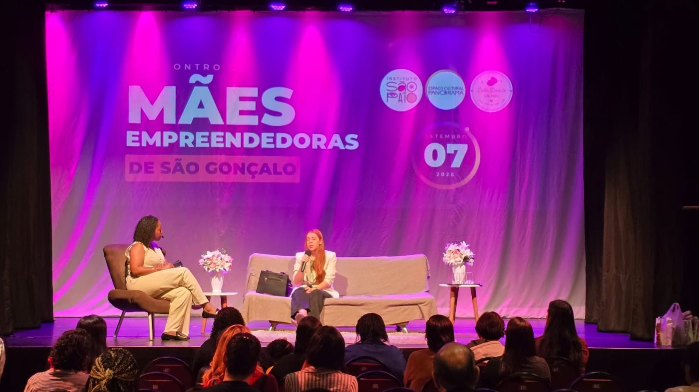
Primeiro encontro de mães empreendedoras da cidade, com palestras, rodas de negócio e escuta, realizado no Panorama em 7 de setembro de 2026. Entrada gratuita.
Ver fotos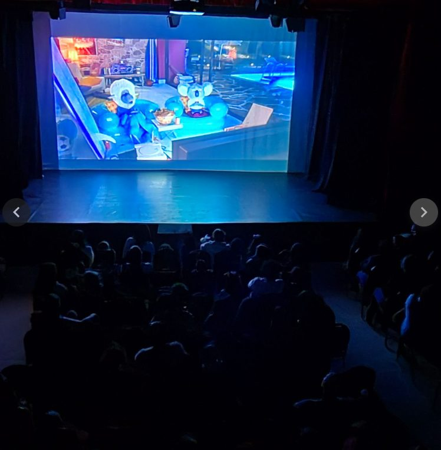
Sessões gratuitas de cinema no teatro do Panorama desde 2024, com roda de conversa depois do filme, integradas ao acervo audiovisual da Casa Amarela.
Ver fotosTransformar a Rua Odete São Paio em um grande corredor de cultura, com novos espaços para a cidade. A biblioteca foi a primeira etapa, e já está aberta.

Espaço para feiras de negócios e eventos, fomentando a economia criativa de São Gonçalo.
Saiba mais
Orientação para adaptar moradias às mudanças do clima, reduzindo riscos para as famílias.
Saiba mais
Primeira etapa do corredor cultural, já em funcionamento. Acervo físico e digital, oficinas e sessões de cinema, em parceria com o Instituto Ciclos do Brasil.
Conhecer a biblioteca